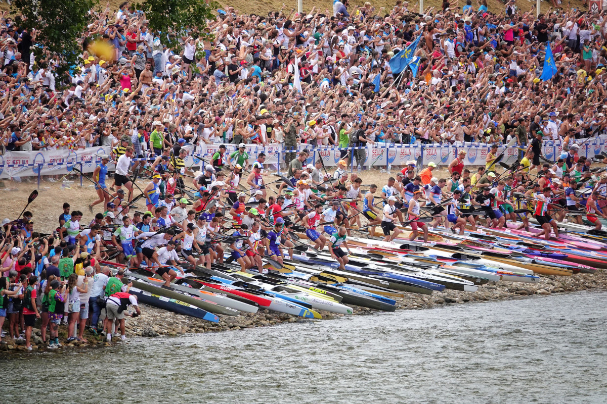

Descenso Internacional del Sella

¡Arrancan las Piraguas! La Fiesta de las Piraguas
El Descenso Internacional del Sella, conocido popularmente como "Les Piragües", es la fiesta deportiva por excelencia de Asturias y una de las citas de piragüismo más importantes del mundo. Cada primer sábado de agosto, miles de palistas de todas las nacionalidades se reúnen bajo el puente de Arriondas para competir por llegar los primeros a la meta en Ribadesella.
La emoción comienza con el tradicional cántico del "Asturias, Patria Querida" y el estruendo de los cañones, que da salida a cientos de embarcaciones en una estampa espectacular. Pero el Sella es mucho más que deporte; es el "Tren Piragüero", son las charangas, los collares de flores y miles de personas celebrando en las orillas del río en un ambiente de alegría inigualable.
Declarada Fiesta de Interés Turístico Internacional, el Sella combina la dureza de la competición de élite con una de las romerías más famosas de España. En 2026, celebramos una edición histórica que promete batir récords de participación y pasión.